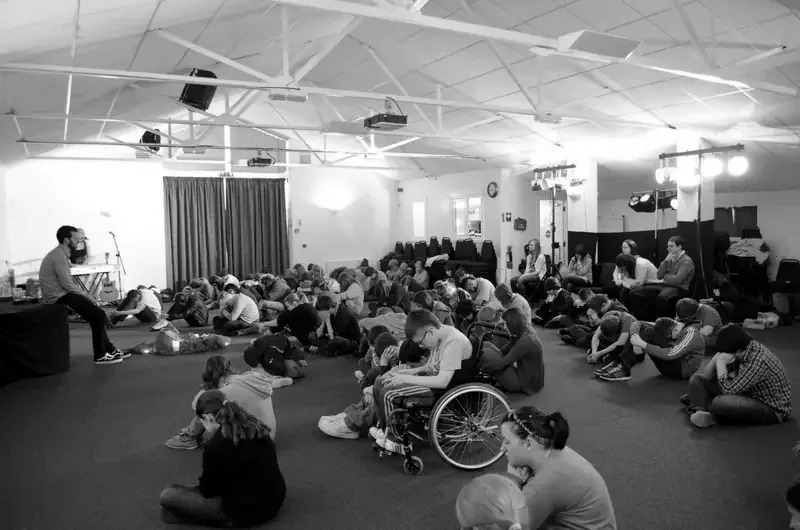
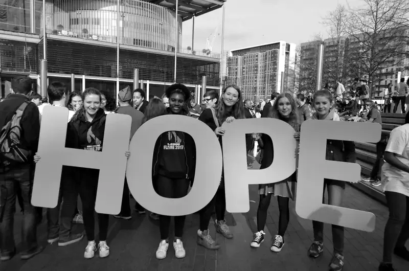

Alongside young people since 1994
The Youth Ministry Team is the Diocese of Hexham and Newcastle's service for young people: a small staff, a team of interns and many volunteers.

Our base
The Emmaus Youth Village opened in 2010 in the Derwent Valley near Consett. It has five lodges with ensuite rooms, an auditorium, a dining hall and a fire pit, with space for up to 90 guests.

Our mission
We aim to encourage young people into a relationship with Christ and fully into the life of the Church.

Across the diocese
We run residential retreats for schools, The Source worship nights in parishes, the summer festivals, and trips to Flame at Wembley and the diocesan pilgrimage to Lourdes.